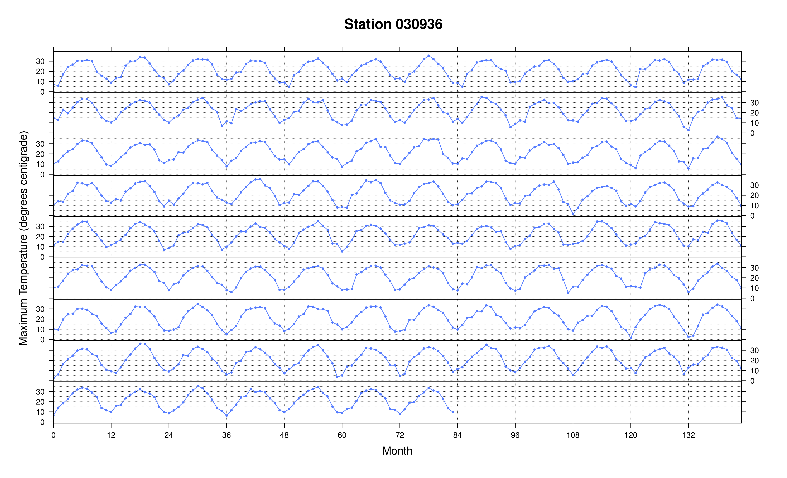

Background
This narrative documentation covers an implementation of Divide and Recombine (D&R) in the R and
Hadoop Integrated Programming Environment, called RHIPE.
The goal of D&R is to provide an environment for data analysts to carry out deep statistical analysis of large, complex data with as much ease and flexibility as is possible with small datasets.
D&R is accomplished by dividing data into meaningful subsets, applying analytical methods to those subsets, and recombining the results. Recombinations can be numerical or visual.
The diagram below is a visual representation of the D&R process. The raw data is stored in some arbitrary structure. We apply a division method to it to obtain a meaningful partitioning. Then we attack this partitioning with several visual and numerical recombination methods, where we apply the method independently to each subset and combine the results. There are many forms of divisions and recombinations, many of which will be covered in this tutorial.
A clearer picture of how D&R works should be reached by reading and trying out the examples in the documentation. It is also recommended to read the references below.
Outline
- First, we
- Next, we
- Then, we
- We also provide R source files for all of the examples throughout the documentation.
Reference
- datadr.org: Divide and Recombine (D&R) with
RHIPE - RHIPE: the engine that makes D&R work for large datasets
- datadr: R package providing the D&R framework
- trelliscope: the visualization companion to
datadr - Large complex data: divide and recombine (D&R) with RHIPE. Stat, 1(1), 53-67
Getting Started
The goal of this documentation is to provide useful examples of how to use RHIPE as a supplement to the introductory tutorials provided here, which focus more on illustrating functionality than doing something useful with data.
RHIPE
RHIPE is the R and Hadoop Integrated Programming Environment. It provides a way to execute Hadoop
MapReduce jobs completely from within R and with R data structures.
To install and use RHIPE, the following are required:
- A cluster of machines (a single node can be used but it pointless outside of testing) -- these machines can be commodity workstations
- Hadoop installed and configured on the cluster
RHIPEand its dependencies (protocol buffers) installed on all the nodes
(1) is often a large barrier to entry. (2) can require a lot of patience and know-how. (3) isn't too difficult.
These requirements are generally enough of a hinderance that only people very serious about scalable data analysis have the perseverance to get a system running. Unfortunately, this is currently the price to pay for scalability. We are working on providing easier access and better documentation for getting set up with this computing platform.
Loading
After all set up and installation has been done, We can load the package:
library(Rhipe)
Loading required package: codetools
Loading required package: rJava
Loading required package: testthat
------------------------------------------------
| Please call rhinit() else RHIPE will not run |
------------------------------------------------
Before any RHIPE code, we have to initialize the package by using:
rhinit()
Rhipe: Using Rhipe.jar file
Initializing Rhipe v0.74.0
Initializing mapfile caches
rhinit() function is trying to initialize the RHIPE subsystem. The objective of RHIPE is to let
the user focus on thinking about the data. The difficulties in distributing computations and
storing data across a cluster are automatically handled by RHIPE and Hadoop. So in rhinit()
not only the configuration of Java and Hadoop, but also RHIPE options have been set up. We
will illustrate more details about those in later sections. As a user, all default configuration
of rhinit() will be enough, and no more argument is necessary for this moment.
And now we are ready to go.
Dataset Information
For the rest of documentation, we are going to demonstrate how to use RHIPE to analyze a large and
complex data from real life.
Source
The data is a compendium of different levels of weather data ranging from stations taking regular hourly measurements, such as those at airports, to cooperative observer stations where the records may only include daily values, have gaps in time or might not measure both temperature and precipitation. The original source for the data are the data archives at the National Climatic Data Center although these data have been further processed to combine stations at similar locations and eliminate stations with short records.
Discription
The data set we are going to download is about observed monthly total precipitation and monthly average minimum and maximum daily temperatures for the coterminous US 1895-1997. Totally, there are 12,392 stations all over the nation, 8,125 stations for temperature, 11,918 stations for precipitation. For each station, an unique ID, station name, elevation, longitude, and altitude are available. If a measurement of a specific station at a specific month is treated as one observation, then there are 6,204,442 observations for precipitation and 4,285,841 observations for temperature.
Copying the Data to HDFS
The Climate data can be downloaded at This site.
We are going to download the tar files and unzip them under the current working directory in R.
for(x in c("t", "p")) {
#t for temperature, and p for precipitation
address <- sprintf("http://www.image.ucar.edu/pub/nychka/NCAR_%sinfill_others.tar", x)
system(sprintf("wget %s ./", address))
system(sprintf("tar -xvf NCAR_%sinfill_others.tar", x))
}
Two folders are locating in your working directory now, and within each folder, there are 'METAinfo', 'README', and 'tmax.complete.Ynnn', 'tmin.complete.Ynnn' in temperature, and 'ppt.complete.Ynnn' in precipitation, where nnn = 001, 002, ..., 103.
Next thing would be copying all those data files to HDFS. As long as a file wants to be the input
of a mapreduce job, it has to be located on HDFS. The RHIPE function that can help us to achieve
this goal is rhput(). As we've already seen previously, the first two arguments in rhput() are
the path of the local file to be copied to the HDFS which are NCAR_pinfill/ or NCAR_tinfill/
under the current working directory, and path on HDFS which the file will be copied to. Here the
path on HDFS is under /tmp/climate/.
for(x in formatC(1:103, width = 3, flag = "0")) {
rhput(paste("./NCAR_pinfill/ppt.complete.Y", x, sep = ""),
paste("/tmp/climate/NCAR_pinfill/ppt.complete.Y", x, sep = "")
)
}
for(x in formatC(1:103, width = 3, flag = "0")) {
rhput(paste("./NCAR_tinfill/tmax.complete.Y", x, sep = ""),
paste("/tmp/climate/NCAR_tinfill/tmax/tmax.complete.Y", x, sep = "")
)
rhput(paste("./NCAR_tinfill/tmin.complete.Y", x, sep = ""),
paste("/tmp/climate/NCAR_tinfill/tmin/tmin.complete.Y", x, sep="")
)
}
rhls("/tmp/climate/NCAR_pinfill")
permission owner group size modtime file
1 -rw-r--r-- tongx supergroup 966 kb 2014-06-25 17:17 /tmp/climate/NCAR_pinfill/ppt.complete.Y001
2 -rw-r--r-- tongx supergroup 966 kb 2014-06-25 17:17 /tmp/climate/NCAR_pinfill/ppt.complete.Y002
3 -rw-r--r-- tongx supergroup 966 kb 2014-06-25 17:17 /tmp/climate/NCAR_pinfill/ppt.complete.Y003
4 -rw-r--r-- tongx supergroup 966 kb 2014-06-25 17:16 /tmp/climate/NCAR_pinfill/ppt.complete.Y004
...
99 -rw-r--r-- tongx supergroup 966 kb 2014-06-25 17:17 /tmp/climate/NCAR_pinfill/ppt.complete.Y099
100 -rw-r--r-- tongx supergroup 966 kb 2014-06-25 17:17 /tmp/climate/NCAR_pinfill/ppt.complete.Y100
101 -rw-r--r-- tongx supergroup 966 kb 2014-06-25 17:17 /tmp/climate/NCAR_pinfill/ppt.complete.Y101
102 -rw-r--r-- tongx supergroup 966 kb 2014-06-25 17:17 /tmp/climate/NCAR_pinfill/ppt.complete.Y102
103 -rw-r--r-- tongx supergroup 966 kb 2014-06-25 17:17 /tmp/climate/NCAR_pinfill/ppt.complete.Y103
By calling the rhls() function, we are able to see all files and sub-directories under one
specific directory on HDFS. The output of rhls() is a data frame object in R with six columns
which are permission, owner, group, size, modtime, and file. All those information
about a file on HDFS are very similar to the local file system.
Two 'METAinfo' files records the station.id, elevation, latitude, and longitude information for each
stations. We will read in this text file into R, and create two R objects which contain all station
information. The reason that we are considering to do this is that we want every single task of our
mapreduce job can access this R object, which means we have to save this R object into HDFS. If we
want to save an R object as .RData into HDFS, instead of rhput(), rhsave() function should be
used. It is very similar to the R base function save(), the only difference is in file argument,
we specify the absolute path to file on HDFS, not local file system path.
UStinfo <- scan("./NCAR_tinfill/METAinfo", skip = 1, what = list( "a", 1, 1, 1))
names(UStinfo) <- c("station.id", "elev", "lon", "lat")
USpinfo <- scan("./NCAR_pinfill/METAinfo", skip = 1, what = list( "a", 1, 1, 1))
names(USpinfo) <- c("station.id", "elev", "lon", "lat")
rhsave(list = ("UStinfo"), file = "/tmp/climate/UStinfo.RData")
rhsave(list = ("USpinfo"), file = "/tmp/climate/USpinfo.RData")
rhls("/tmp/climate")
permission owner group size modtime file
1 drwxr-xr-x tongx supergroup 0 2014-06-27 22:11 /tmp/climate/NCAR_pinfill
2 drwxrwxrwx tongx supergroup 0 2014-06-25 17:34 /tmp/climate/NCAR_tinfill
3 -rw-r--r-- tongx supergroup 111.4 kb 2014-06-26 21:52 /tmp/climate/USpinfo.RData
4 -rw-r--r-- tongx supergroup 79.61 kb 2014-06-26 21:52 /tmp/climate/UStinfo.RData
UStinfo and USpinfo are two list objects, each has four elements which are station.id, elevation,
latitude, and longitude respectively. Two .RData have been saved into HDFS for later use.
R Objects: Dividing by year
The data needs to be converted to R objects. Since we will be doing repeated analyses on the data, it is better to spend time converting them to R objects making subsequent computations faster, rather than tokenizing strings and converting to R objects for every analysis. In the following, we are going to use maximum temperature as the example.
A sample of the text file:
472209 42 16 11 34 61 83 69 46 82 6 20 6 111111111111
472240 21 16 12 34 104 95 95 55 127 12 44 14 111111111111
472314 28 9 5 35 86 80 59 66 137 10 30 28 111111111111
...
The complete maximum temperature files based on regular station data have the names tmax.complete.Ynnn where nnn = 001, 002, ..., 103 and 001=1895 and 103=1997. Each separate data file consists of the maximum temperature for a single year. Each line of the file is data for one station according to the format: station id, 12 maximum temperature ( Jan-DEC), 12 missing value/infill codes (1=missing, 0=present)
Our first RHIPE task would be how to convert the text files on HDFS to R objects. For our climate
data, the first thing we can do is to create one data frame for each year since our text files are
separated by year.
map <- expression({
y <- do.call("rbind", lapply(map.values, function(r) {
row <- strsplit(r, " +")[[1]]
c(row[1], row[2:13], substring(row[14], 1:12, 1:12))
}))
file <- Sys.getenv("mapred.input.file")
k <- as.numeric(substr(unlist(strsplit(strsplit(file, "/")[[1]][8], "[.]"))[3], 2, 4))
miss <- as.data.frame(matrix(as.numeric(y[, (1:12) + 13]), ncol = 12))
tmp <- as.data.frame(matrix(as.numeric(y[, (1:12) + 1]), ncol = 12))
name <- y[, 1]
tmp <- tmp/10
tmp[miss == 1] <- NA
names(tmp) <- c(
"Jan", "Feb", "Mar", "Apr", "May", "June",
"July", "Aug", "Sep", "Oct", "Nov", "Dec"
)
tmp <- cbind(station.id = name, tmp, year = rep((k + 1894)))
UStmax <- data.frame(
station.id = rep(tmp$station.id, 12),
elev = rep(UStinfo$elev, 12),
lon = rep(UStinfo$lon, 12),
lat = rep(UStinfo$lat, 12),
year = rep(tmp$year,12),
month = rep(names(tmp)[2:13], each = dim(tmp)[1]),
tmax = c(tmp[, 2], tmp[, 3], tmp[, 4], tmp[, 5], tmp[, 6], tmp[, 7],
tmp[, 8], tmp[, 9], tmp[, 10], tmp[, 11], tmp[, 12], tmp[, 13])
)
rhcollect(unique(tmp$year), UStmax)
})
mr <- rhwatch(
map = map,
shared = c("/tmp/climate/UStinfo.RData"),
setup = expression(map = {load("UStinfo.RData")}),
input = rhfmt("/tmp/climate/NCAR_tinfill/tmax", type = "text"),
output = rhfmt("/tmp/climate/output/tmax.byyear", type = "sequence"),
mapred = list( mapred.reduce.tasks = 100, rhipe_map_buff_size = 8125 ),
readback = FALSE
)
A valid map-reduce job in RHIPE is consist of a map expression, an optional reduce expression, and a
execution function rhwatch(). Let's run this entire code in R first. In R console you will see that
job running information is keeping popping out, which will be helpful for you to have some idea
about the status of running job.
[Fri Jun 26 23:43:04 2014] Name:2014-06-26 23:43:01 Job: job_201406101143_0090 State: PREP Duration: 0.246
URL: http://hadoop-01.rcac.purdue.edu:50030/jobdetails.jsp?jobid=job_201406101143_0090
pct numtasks pending running complete killed failed_attempts killed_attempts
map 0 103 103 0 0 0 0 0
reduce 0 100 100 0 0 0 0 0
Waiting 5 seconds
[Fri Jun 26 23:43:09 2014] Name:2014-06-26 23:43:01 Job: job_201406101143_0090 State: RUNNING Duration: 7.212
URL: http://hadoop-01.rcac.purdue.edu:50030/jobdetails.jsp?jobid=job_201406101143_0090
pct numtasks pending running complete killed failed_attempts killed_attempts
map 0 103 0 103 0 0 0 0
reduce 0 100 100 0 0 0 0 0
Waiting 5 seconds
There will be total 103 key/value pairs in the output files. In RHIPE, key/value pairs are R lists
with two elements, one for the key and one for the value. In this example, key is the year, value is
a data frame with the observations for 12 months over 8,125 stations for that year. rhread() function
is used to read in key/value pairs on HDFS. We can specify the type to be sequence, map, or text,
it depends on what type of file it is. The default is sequence which is the type of key/value pairs
file on HDFS. We can also specify how many key/value pairs we want to read into R from HDFS by max
argument.
rst1 <- rhread("/tmp/climate/output/tmax.byyear", max = 1)
str(rst1)
List of 1
$ :List of 2
..$ : num 1913
..$ :'data.frame': 97500 obs. of 7 variables:
.. ..$ station.id: Factor w/ 8125 levels "010148","010160",..: 1 2 3 4 5 6 7 8 9 10 ...
.. ..$ elev : num [1:97500] 339 201 201 49 107 184 308 220 92 88 ...
.. ..$ lon : num [1:97500] -86.2 -86 -85.9 -88.1 -86.5 ...
.. ..$ lat : num [1:97500] 34.2 33 33 33.1 31.3 ...
.. ..$ year : num [1:97500] 1913 1913 1913 1913 1913 ...
.. ..$ month : Factor w/ 12 levels "Apr","Aug","Dec",..: 5 5 5 5 5 5 5 5 5 5 ...
.. ..$ tmax : num [1:97500] NA NA NA NA NA NA NA NA NA NA ...
Here we read in one key/value pair, key is 1913, value is a data frame with 97,500 rows, 7 columns.
Now let's spend more time on the code.
The map expression
Map is an R expression that is evaluated by RHIPE during the map stage. For each task, RHIPE will
call this expression multiple times. The input and output of map function are both key/value pairs.
A key/value pair (KVP) is an abstract data type that includes a group of key identifiers and a set
of associated values. In other words, the map function processes a key/value pair to generate a set
of intermediate key/value pairs. So in our previous map function, we process the key/value pairs we
got from the text file into new key/value pairs which every year is the key, and the corresponding
value would be a data frame. The key/value pairs read in from input file will be saved as map.keys
and map.values respectively. map.keys and map.values are two lists which are consist of all
keys and all values that will be executed in one task at one moment respectively. In this example,
which the input file of a map-reduce job is a text file, all keys (indices) in map.keys will not have
any meaning but will be unique, and all the corresponding values in map.values are each row of text
file saved as a string.
So in map expression, we split the one string of each row to individual maximum temperature
measurement, as well as the measurement status for each map.values. and then combined each row.
The length of map.keys and map.values are 8,125 which is the number of row in each text file.
We will explain this with more details in later Execution function session. This makes sure that
for each task, we have all rows for one year. Sys.getenv("mapred.input.file") here is how we get
the name of the file is processed by mapper. This is necessary for our example since the only place
keep the year information is the file name. After this, we assigned year to k, assigned NA to
all months with missing value. Finally we created a data frame UStmax including station.id,
elev, lon, lat, year, month, and tmax.
Finally we collect a new key/value pair, which key is year and value is data frame UStmax, by
using rhcollect() function in RHIPE. The first argument of rhcollect() is the key, and the second
argument is the value. Suppose we have 100 rows, and each row has 20 words, by using our map function,
we will be collecting 2,000 new key/value pairs, or we call them intermediate key/value pairs.
The reduce expression
In this example, we do not include any reduce expression. It is OK to skip a reduce step in a map-reduce job. What happens is after the map step, all intermediate key/value pairs will be first sorted based on key and then wrote onto HDFS.
Execution function
After the map and reduce expression, we are heading to the execution function of a map-reduce job in
RHIPE. rhwatch() is a call that packages the Map-reduce job which is sent to Hadoop. In rhwatch()
function, we specify what the map and reduce expression of the map-reduce job is. We assign the map and
reduce expression to map and reduce argument in rhwatch() respectively. Input and output
argument in rhwatch() function is used to specify the path on HDFS of input file and output file
respectively. mapred argument is a list that can be used to customize the Hadoop and RHIPE
options. Here we specify the mapred.reduce.tasks to be 100, so the number of reduce tasks will be
set to be 100. This number also is related to the number of output files, since each reduce task
will generate one piece of output file for the final output. rhipe_map_buff_size is set up to be
8,125, this argument is useful when we want to control how many keys and values are in map.keys
and map.values for one task if the type of input file are text. In later section, we will give
more details about this argument.
R Objects: Dividing by station.id
If we are interested in applying time series data analysis on each station, it will be reasonable
to assume we want to have new key/value pairs such that the keys are station.id, and the values
are corresponding data frame of all 1,236 observations for the station.
map <- expression({
lapply(seq_along(map.keys), function(r) {
lapply(1:dim(map.values[[r]]), function(x) {
key <- as.character(map.values[[r]][x, 1])
value <- map.values[[r]][x, -1]
rhcollect(key, value)
})
})
})
reduce <- expression(
pre = {
combined <- data.frame()
},
reduce = {
combined <- rbind(combined, do.call(rbind, reduce.values))
},
post = {
if(sum(!is.na(combined$tmax)) == 1236) {
rhcollect(reduce.key, combined)
}
}
)
z <- rhwatch(
map = map,
reduce = reduce,
input = rhfmt("/tmp/climate/output/tmax.byyear", type = "sequence"),
output = rhfmt("/tmp/climate/output/tmax.bystation", type = "sequence"),
mapred = list(mapred.reduce.tasks = 64),
readback = FALSE
)
The map expression
In the map, we iterate over all rows from each key/value pairs. For each row, we create key
object which is the station id, and value object which is the rest of the row, and then we
collect one key/value pair for each row using rhcollect(). There are 103 key/value pairs in
the input file /tmp/climate/output/tmax.byyear, and each value has 97,500 rows. Totally, we
will collect over 10 million key/value pairs in the map step.
The reduce expression
As we saw in the code, a reduce expression should like:
reduce <- expression(
pre = {
# initialize objects in which results will be stored
},
reduce = {
# take current batch of reduce.values and update the result
},
post = {
# emit output key-value pairs using collect(key, value)
}
)
In RHIPE, reduce is an R expression that is evaluated by RHIPE during the reduce step, or it is
a vector of expressions with names pre, reduce, and post. All key/value pairs that share same
key will be grouped together and processed to be applied reduce function. In reduce-pre session, we
initialize the objects in which results will be stored, here is an empty data frame, combined.
reduce.key is the shared key, and reduce.values is a list that includes all values corresponding
to that unique reduce.key. In reduce-reduce session, we cumulative all reduce.values, here we
combined all rows by row for each station id. Finally in post session, we collect the final key/value
pair not for every station, but only the stations that do not have missing observations.
rst2 <- rhread("/tmp/climate/output/tmax.bystation", max=10)
str(rst2)
List of 10
$ :List of 2
..$ : chr "080478"
..$ :'data.frame': 1236 obs. of 6 variables:
.. ..$ elev : num [1:1236] 38 38 38 38 38 38 38 38 38 38 ...
.. ..$ lon : num [1:1236] -81.8 -81.8 -81.8 -81.8 -81.8 ...
.. ..$ lat : num [1:1236] 27.9 27.9 27.9 27.9 27.9 27.9 27.9 27.9 27.9 27.9 ...
.. ..$ year : num [1:1236] 1978 1978 1978 1978 1978 ...
.. ..$ month: Factor w/ 12 levels "Apr","Aug","Dec",..: 10 2 3 11 12 7 5 9 8 12 ...
.. ..$ tmax : num [1:1236] 28.1 33.3 25.1 29.6 33.1 32.6 18.8 31.9 27.5 32.4 ...
$ :List of 2
..$ : chr "097847"
..$ :'data.frame': 1236 obs. of 6 variables:
.. ..$ elev : num [1:1236] 14 14 14 14 14 14 14 14 14 14 ...
.. ..$ lon : num [1:1236] -81.2 -81.2 -81.2 -81.2 -81.2 -81.2 -81.2 -81.2 -81.2 -81.2 ...
.. ..$ lat : num [1:1236] 32.1 32.1 32.1 32.1 32.1 ...
.. ..$ year : num [1:1236] 1901 1901 1901 1901 1901 ...
.. ..$ month: Factor w/ 12 levels "Apr","Aug","Dec",..: 1 7 10 4 5 2 8 12 6 9 ...
.. ..$ tmax : num [1:1236] 21.7 30.8 18.4 14.9 16.2 30.7 20.3 30 32.1 29.3 ...
...
The result is exactly what we want. For each key/value pair, the key is the station.id, and the
value is a data frame with 6 columns and 1,236 rows.
Subset: 10 Stations
For the demonstration purpose, we are going to only use 10 stations as the subset to demonstrate the rest of analysis.
data <- rhread("/tmp/climate/output/tmax.bystation", max=10)
rhwrite(data, file="/tmp/climate/output/tmax.bystation.10")
Wrote 1.2 MB,10 chunks, and 10 elements (100% complete)
The first question in our head now is where are these 10 stations? By using and panel in lattice
library, this can be done easily.
library(maps)
library(lattice)
us.map <- map('state', plot = FALSE, fill = TRUE)
lo <- as.data.frame(
do.call("rbind", lapply(data,
function(r){c(r[[2]]$lat[1], r[[2]]$lon[1])})
)
)
st <- unlist(lapply(data, "[[", 1))
location <- cbind(st, lo)
names(location) <- c("station.id", "lat", "lon")
b <- xyplot(lat ~ lon,
data = location,
xlab = list(label="Longitude"),
ylab = list(label="Latitude"),
pch = 16,
cex = 1,
col = "red",
xlim = c(-125, -66),
ylim = c(24.5, 50),
panel = function(...) {
panel.polygon(us.map$x,us.map$y)
panel.xyplot(...)
}
)
print(b)
Time Series of each station
Now it is a good time to dig into the visualization of time series plot for each station. For each
station(for we can say for each subset), we would like to create a time series plot which contains
1236 monthly observations. In RHIPE, we can create multiple files of plot parallelly through
multiple tasks. Each task will create one ps file for each station, and then save the plotting
files on HDFS. For this example, we do not need a reduce function, all job can be done in the map
function.
map <- expression({
lapply(seq_along(map.keys), function(r) {
tmp <- map.values[[r]]
month <- c("Jan","Feb","Mar","Apr","May","June","July","Aug", "Sep", "Oct", "Nov", "Dec")
tmp$month <- factor(tmp$month, levels = month)
tmp <- tmp[with(tmp, order(year, month)),]
tmp$factor <- factor(rep(rep(paste("Period", 1:9), c(rep(144,8),84))),
levels=paste("Period", c(9:1))
)
tmp$time <- c(rep(0:143,8), 0:83)
trellis.device(postscript,
file = paste("./tmp/tmax.vs.time", map.keys[[r]], "ps", sep="."),
color = TRUE,
paper = "legal"
)
b <- xyplot( tmax ~ time | factor,
data = tmp,
xlab = list(label = "Month", cex = 1.2),
ylab = list(label = "Maximum Temperature (degrees centigrade)", cex = 1.2),
main = list(label = paste("Station ", map.keys[[r]], sep=""), cex=1.5),
type = "b",
pch = 16,
cex = 0.5,
layout = c(1,9),
strip = FALSE,
aspect = 0.06,
xlim = c(0, 143),
scales = list(
y = list(relation = 'same', alternating = TRUE),
x = list(at = seq(0, 143, by = 12), relation ='same')
),
panel = function(...) {
panel.abline(
h = seq(0,max(tmp$tmax),by=5),
v = seq(0,145,by=12),
color = "lightgrey",
lty = 3,
lwd = 0.5
)
panel.xyplot(...)
}
)
print(b)
dev.off()
})
})
z <- rhwatch(
map = map,
input = "/tmp/climate/output/tmax.bystation.10",
output = "/tmp/climate/output/graph/tmax.vs.time/",
setup = expression(
map = {library(lattice)}
),
mapred = list(
mapred.reduce.tasks = 0,
mapred.task.timeout = 0
),
copyFiles = TRUE,
readback = FALSE,
)
In map function, we created a ps file named 'tmax.vs.time' with station id saved under /tmp/.
Every ps file is created first on corresponding mapper node, then we have to specify the copyFiles
argument in rhwatch function to copy the ps files which on different mapper nodes to the HDFS.
rhls("/tmp/climate/output/graph/tmax.vs.time")
permission owner group size modtime file
1 -rw-r--r-- tongx supergroup 0 2014-07-21 13:56 /tmp/climate/output/graph/tmax.vs.time/_SUCCESS
2 drwxr-xr-x tongx supergroup 0 2014-07-21 13:56 /tmp/climate/output/graph/tmax.vs.time/_outputs
3 -rw-r--r-- tongx supergroup 94 bytes 2014-07-21 13:56 /tmp/climate/output/graph/tmax.vs.time/part-m-00000
4 -rw-r--r-- tongx supergroup 94 bytes 2014-07-21 13:56 /tmp/climate/output/graph/tmax.vs.time/part-m-00001
5 -rw-r--r-- tongx supergroup 94 bytes 2014-07-21 13:56 /tmp/climate/output/graph/tmax.vs.time/part-m-00002
6 -rw-r--r-- tongx supergroup 94 bytes 2014-07-21 13:56 /tmp/climate/output/graph/tmax.vs.time/part-m-00003
7 -rw-r--r-- tongx supergroup 94 bytes 2014-07-21 13:56 /tmp/climate/output/graph/tmax.vs.time/part-m-00004
8 -rw-r--r-- tongx supergroup 94 bytes 2014-07-21 13:56 /tmp/climate/output/graph/tmax.vs.time/part-m-00005
9 -rw-r--r-- tongx supergroup 94 bytes 2014-07-21 13:56 /tmp/climate/output/graph/tmax.vs.time/part-m-00006
10 -rw-r--r-- tongx supergroup 94 bytes 2014-07-21 13:56 /tmp/climate/output/graph/tmax.vs.time/part-m-00007
11 -rw-r--r-- tongx supergroup 94 bytes 2014-07-21 13:56 /tmp/climate/output/graph/tmax.vs.time/part-m-00008
12 -rw-r--r-- tongx supergroup 94 bytes 2014-07-21 13:56 /tmp/climate/output/graph/tmax.vs.time/part-m-00009
All 'part-m-...' files are empty since we did not have real output content from the map-reduce job.
Downloaded files are actually created ps files are copied into a sub-directory named _outputs
rhls("/tmp/climate/output/graph/tmax.vs.time/_outputs")
permission owner group size modtime file
1 -rw-r--r-- tongx supergroup 64.92 kb 2014-07-21 13:56 /tmp/climate/output/graph/tmax.vs.time/_outputs/tmax.vs.time.030936.ps
2 -rw-r--r-- tongx supergroup 64.88 kb 2014-07-21 13:56 /tmp/climate/output/graph/tmax.vs.time/_outputs/tmax.vs.time.035908.ps
3 -rw-r--r-- tongx supergroup 64.92 kb 2014-07-21 13:56 /tmp/climate/output/graph/tmax.vs.time/_outputs/tmax.vs.time.080478.ps
4 -rw-r--r-- tongx supergroup 66.41 kb 2014-07-21 13:56 /tmp/climate/output/graph/tmax.vs.time/_outputs/tmax.vs.time.097847.ps
5 -rw-r--r-- tongx supergroup 66.39 kb 2014-07-21 13:56 /tmp/climate/output/graph/tmax.vs.time/_outputs/tmax.vs.time.160549.ps
6 -rw-r--r-- tongx supergroup 64.42 kb 2014-07-21 13:56 /tmp/climate/output/graph/tmax.vs.time/_outputs/tmax.vs.time.176905.ps
7 -rw-r--r-- tongx supergroup 64.72 kb 2014-07-21 13:56 /tmp/climate/output/graph/tmax.vs.time/_outputs/tmax.vs.time.221707.ps
8 -rw-r--r-- tongx supergroup 64.72 kb 2014-07-21 13:56 /tmp/climate/output/graph/tmax.vs.time/_outputs/tmax.vs.time.285728.ps
9 -rw-r--r-- tongx supergroup 66.43 kb 2014-07-21 13:56 /tmp/climate/output/graph/tmax.vs.time/_outputs/tmax.vs.time.390128.ps
10 -rw-r--r-- tongx supergroup 65.39 kb 2014-07-21 13:56 /tmp/climate/output/graph/tmax.vs.time/_outputs/tmax.vs.time.472839.ps
Then we can copy the files from HDFS to local file system by using rhget function in RHIPE.
rhget("/tmp/climate/output/graph/tmax.vs.time/_outputs/tmax.vs.time.030936.ps", "~/")

Distribution of Temperature
Distribution plot of the response, maximum temperature, is one of the important plot that we want to illustrate. So we are going to plot the normal quantile plot conditional on month for each station.
map <- expression({
lapply(seq_along(map.values), function(r) {
tmp <- map.values[[r]]
month <- c("Jan","Feb","Mar","Apr","May","June","July","Aug", "Sep", "Oct", "Nov", "Dec")
tmp$month <- factor(tmp$month, levels = month)
tmp <- tmp[with(tmp, order(year, month)),]
trellis.device(postscript,
file = paste("./tmp/QQ.tmax.month", map.keys[[r]], "ps", sep = "."),
color = TRUE,
paper = "legal"
)
a <- qqmath(~ tmax | month,
data = tmp,
distribution = qnorm,
aspect = "xy",
layout = c(12,1),
pch = 16,
cex = 0.5,
main = list(label = paste("Station ", map.keys[[r]], sep=""), cex = 1.5),
xlab = list(label = "Unit normal quantile", cex = 1.2),
ylab = list(label = "Max Temperature(degrees centigrade)", cex = 1.2),
prepanel = prepanel.qqmathline,
panel = function(x, y,...) {
panel.grid()
panel.qqmathline(x, y = x)
panel.qqmath(x, y,...)
}
)
print(a)
dev.off()
})
})
z <- rhwatch(
map = map,
input = "/tmp/climate/output/tmax.bystation.10",
output = "/tmp/climate/output/graph/QQ.tmax.month",
setup = expression(
map = {library(lattice)}
),
mapred = list(
mapred.reduce.tasks = 0,
mapred.task.timeout = 0
),
copyFiles = TRUE,
readback = FALSE,
)
We still need to use rhget function to copy the ps plots from HDFS to the local file system.
rhget("/tmp/climate/output/graph/QQ.tmax.month/_outputs/QQ.tmax.month.472839.ps", "~/")
Modeling and Diagnostics
Seasonal-Trend decomposition procedure based on Loess (STL)[Cleveland et al, 1990] is a decomposition method for time series data analysis. Each observation in the time series is decomposed into three parts: the trend component, the seasonal component, and the remainder component. The long term change in the time series is captured by the trend component. A cyclical pattern is reflected in the seasonal component. The residuals, the remaining variation, are the remainder component.
STL+ is an advanced version of original STL procedure, which is introduced by Ryan Hafen. STL+ added
several new feature such as capability to handle missing value, local quadratic fitting for trend
and seasonal components, and adding multiple frequency components, and so forth. In R the package
for STL+ is called stl2 which can be installed as following:
library(devtools)
install_github("stl2", "hafen")
Experiment 1
The first STL+ model we are going to build is setting parameters as following:
t.window= 495, t.degree= 2, s.window= 77, s.degree= 1, inner= 10, outer= 0. So we plan
to get local linear fit for the seasonal component and local quadratic fit for the trend component.
The fitting span for trend component is about 40% of all observations, and span for seasonal component
is about 75% of all yearly cycles.
map <- expression({
lapply(seq_along(map.values), function(r) {
tmp <- map.values[[r]]
month <- c("Jan","Feb","Mar","Apr","May","June","July","Aug", "Sep", "Oct", "Nov", "Dec")
tmp$month <- factor(tmp$month, levels = month)
tmp <- tmp[order(tmp$year, tmp$month),]
tmp$factor <- factor(
rep(rep(paste("Period", 1:9), c(rep(144,8),84))),
levels=paste("Period", c(9:1))
)
tmp$time <- c(1:1236)
tmp$time2 <- c(rep(0:143,8), 0:83)
ylab <- "Maximum Temperature (degrees centigrade)"
stl.fit <- stl2(
x = tmp$tmax,
t = tmp$time,
n.p = 12,
s.window = 77,
s.degree = 1,
t.window = 495,
t.degree = 2,
inner = 10,
outer = 0
)$data
stl.fit <- cbind(tmp, stl.fit)
trellis.device(postscript,
file = paste("./tmp/stl.1.strend+seasonal", map.keys[[r]], "ps", sep = "."),
color = TRUE,
paper = "legal"
)
b <- xyplot( raw ~ time2 | factor,
data = stl.fit,
xlab = list(label = "Month", cex = 1.2),
ylab = list(label = ylab, cex = 1.2),
main = list(label = paste("Station", map.keys[[r]], sep = " "), cex = 1.5),
layout = c(1,9),
aspect= 0.06,
strip = FALSE,
xlim = c(0, 143),
scales = list(
y = list(relation = 'same', tick.number = 4, alternating = TRUE),
x = list(at = seq(0, 143, by = 12), relation = 'same')
),
panel = function(x, y, subscripts,...) {
panel.abline(v = seq(0,145, by = 12), color = "lightgrey", lty = 3, lwd = 0.5)
panel.xyplot(
x = x,
y = y,
type = "p",
col = "#0080ff",
pch = 16,
cex = 0.5, ...
)
panel.xyplot(
x = stl.fit[subscripts,]$time2,
y = (stl.fit[subscripts,]$trend+stl.fit[subscripts,]$seasonal),
type = "l",
col = "#ff00ff",
lwd=1, ...
)
}
)
print(b)
dev.off()
})
})
z <- rhwatch(
map = map,
input = "/tmp/climate/output/tmax.bystation.10",
output = "/tmp/climate/output/graph/stl.1.trend+seasonal",
setup = expression(
map = {
library(lattice)
library(yaImpute, lib.loc = lib.loc)
library(stl2, lib.loc = lib.loc)
}
),
mapred = list(
mapred.reduce.tasks = 0,
mapred.task.timeout = 0
),
copyFiles = TRUE,
readback = FALSE,
)
Then we can copy the files from HDFS to local file system by using rhget function in RHIPE.
rhget("/tmp/climate/output/graph/stl.1.trend+seasonal/_outputs/stl.1.strend+seasonal.030936.ps", "~/")
In the time series plot, the trend component plus seasonal component of maximum temperature is plotting against month index. The whole time series is chunked into 9 periods. Each of the first 8 periods has 144 monthly observations, the last period has 84 monthly observations. The raw observations are drawn with blue points, and the seasonal component plus trend component was drawn with purple curve.